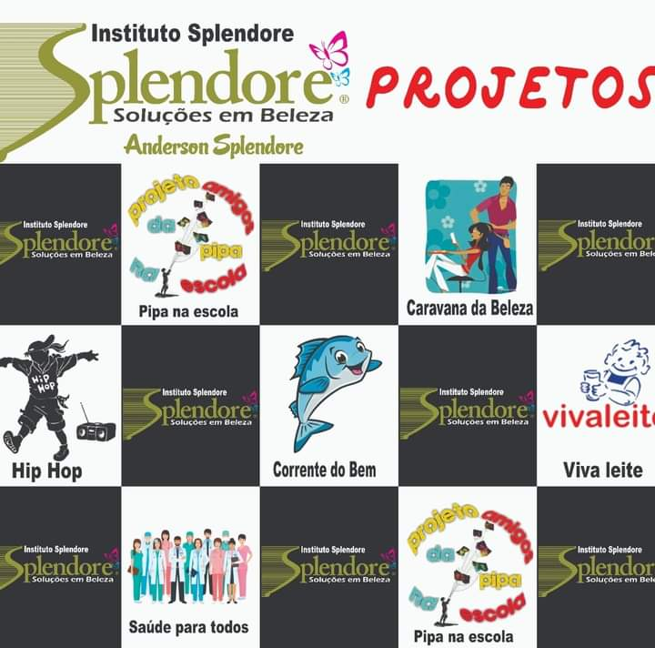

Nosso Trabalho
O nosso trabalho começou em 2020, formado por um grupo de 7 pessoas, liderado por Anderson Splendore. Hoje, somos um dos maiores projetos sociais de Ferraz de Vasconcelos e atendemos, a muitas pessoas e familias vulneráveis, da Zona Leste.
Promovemos a transformação de milhares de vidas por meio de projetos contínuos de ajuda humanitária e voluntária, geração de renda e acesso à alimentação, e saúde. Promovendo o desenvolvimento local e a inclusão social para erradicar a fome e a miséria visando ajudar as pessoas carentes. Com oportunidades, muitas crianças e jovens já enxergam um futuro diferente.
+ de 500 cestas básicas distribuidas
Alimentação
Alimentação
1000+ Cortes de cabelo
Cuidados básicos
Cuidados básicos
Milhares de Pessoas
Sendo Ajudadas
Sendo Ajudadas
Como Transformamos Vidas
- Voluntariado
- O Instituto Splendore é movido por 7 voluntários ativos que doam tempo e amor para a transformação de vidas e para a construção de um mundo com menos desigualdades.
- Trabalhos Sociais
- Programa Pipa na Escola
- Caravana da Beleza
- Programa Viva Leite
- Saude para Todos e Corrente do Bem
- Hip Hop
- Distribuição de Cestas Básicas e Peixes
Como Ajudar

Doação que Transforma Vidas
A doação é umas das linguagens mais bela do amor
Você pode fazer Depoósito Bancário, PIX
Ou Doações Mensais atraves de Cartão de Credito ou Boleto, podendo cancelar a qualquer momento
Recebemos também Doações de Materias, Brinquedos, Roupas, Eletrodoméstico em boa conservação
Você pode ajudar a levar a transformação de diversas maneiras. Junte-se a nós!
DEPÓSITOS EM CONTA
Razão Social: INSTITUTO SPLENDORE CONTRA A FOME E A MISÉRIA – CNPJ: 12.315.478/0001-52
Contato
Ferraz de Vasconcelos,SP, Brasil
Telefone: 11 98443-7379
Email: andersonsplendore23@gmail.com
Entre em contato: